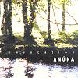

Celtic Lyrics Corner > Artists & Groups > Anúna > Invocation 2002 > Song Of Oisín
|  | Song Of Oisín |
| Credits : | n/a |
| Appears On : | Invocation ; Invocation 2002 |
| Language : | English & Gaeilge (Irish Gaelic) |
| Lyrics : | English Translation : |
|
Listen to the running of the waves
Hear the sound that carries on the wind |
|
| Chorus : | |
| Is mé Oisín gem arsaidh | I am Oisín, although ancient |
| Do airrcis mé mná miolla | I have loved gentle women |
| Léithi is goire don duinne | Gray is nearest to brown |
| Cruime is goire don dirge | Crooked is nearest to being upright |
|
Voices call, carry on the wind
Ancient songs whisper to the end |
|
| (Chorus) | |
|
Listen to the running of the waves
Hear the sound that carries on the wind |
|
| (Chorus) |